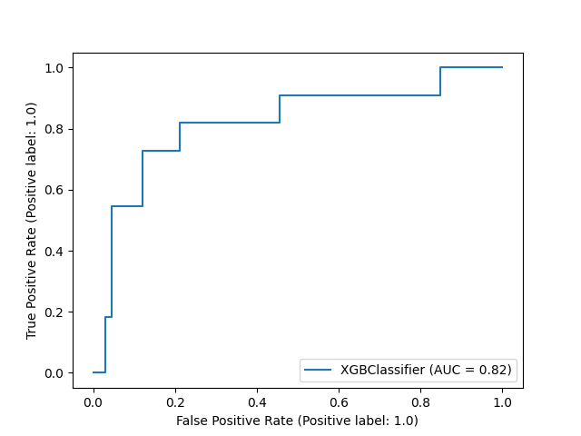
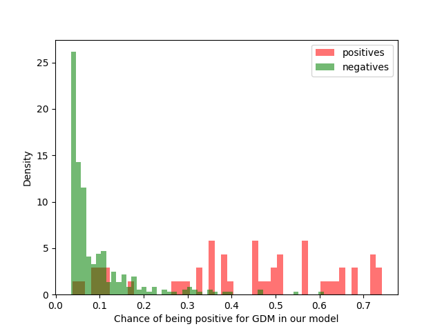

The purpose of this website is to predict the probability of GDM using general
clinical data at the 12th week of pregnancy
The fields we use to predict the disease are:
Medications: chronic medications (Yes; No) taken prior to the second trimester.
Aspirin: aspirin during pregnancy (Yes; No) prior to the second trimester.
Smoking: smoking during pregnancy (Yes; No).
BMI: body mass index.
FGT: fasting glucose test in the 1st trimester.
Sleeping hours: hours slept every night on average.
GOT: oral glucose tolerance test in the 1st trimester.
GPT: conventional urine pregnancy test in the 1st trimester.
PAPP-A: Pregnancy-associated plasma protein A in milliunits per liter
The prediction is made using an XGBoost algorithm with an ROC-AUC score of 0.82.
The plots below represent the ROC curve and the distribution of
positives and negative scores in the sample used here.
We report the results as the aboslute score of the algorithm,
as well as the relative position vs all the positive and negative samples.
The results are based on a survey in the Israeli population.
A more accurate estimate of the probability of GDM can be obtained
using an additional microbiome sample.
The results presented here are the statistical outcome of a machine learning algorithm
They do not come instead of a medical advice from a practitioner.

